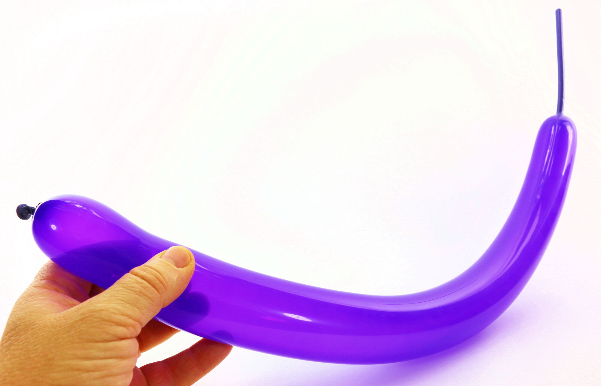
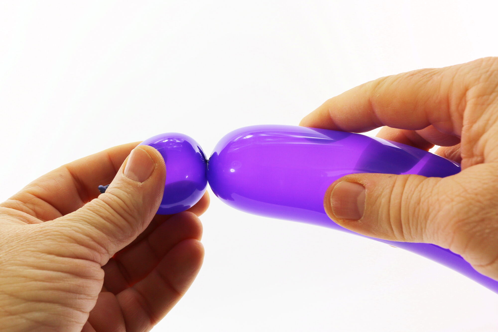
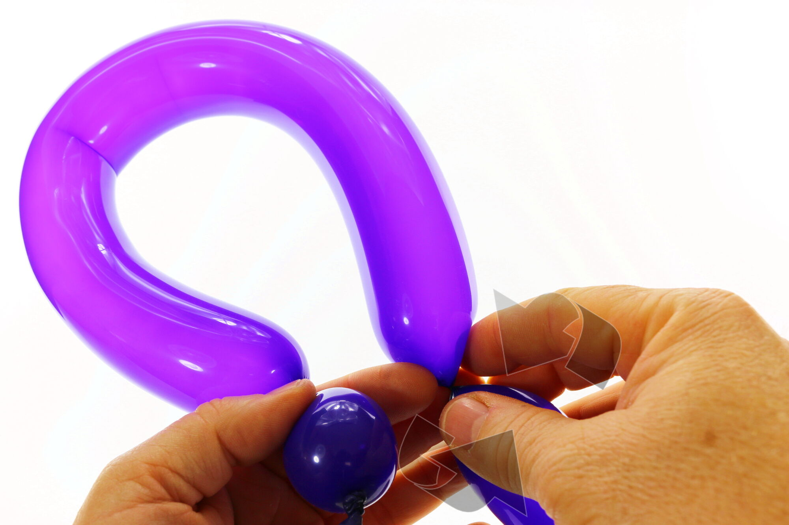
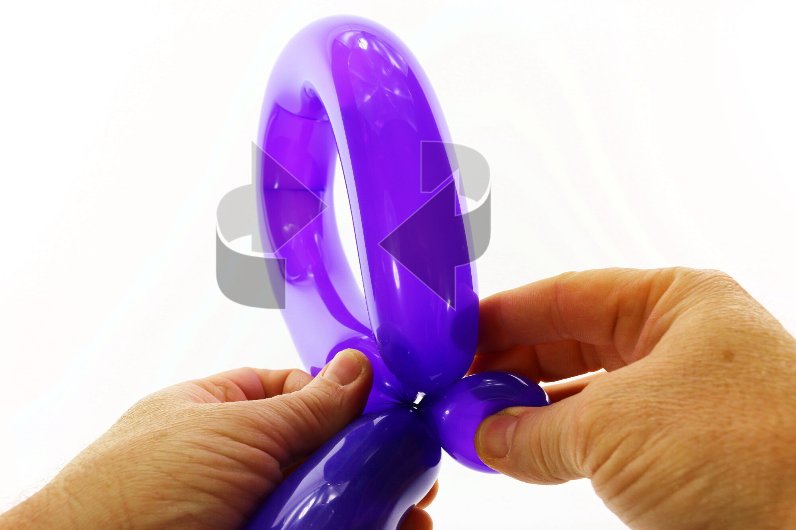
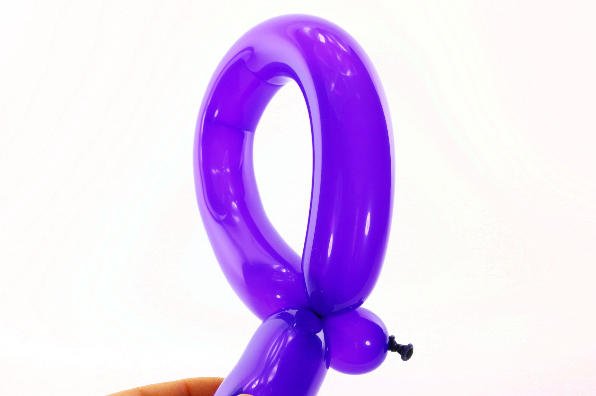
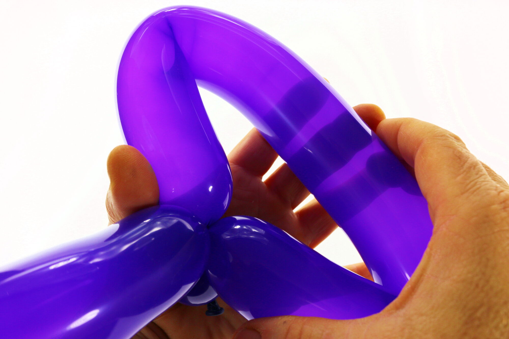
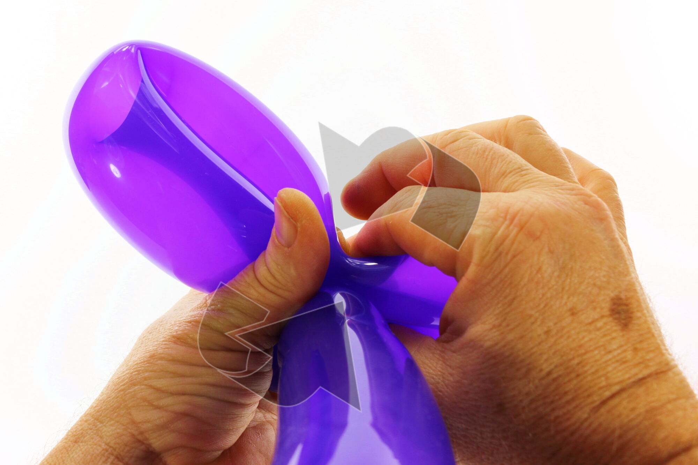
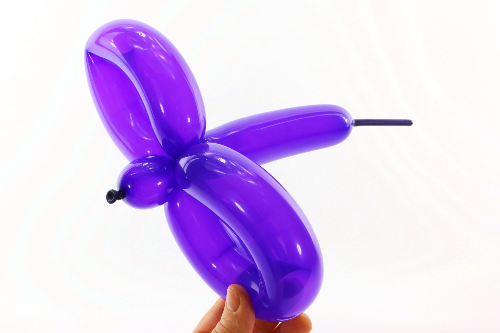

Voici sans doute, après la bulle, la plus simple de toutes les techniques de base de la sculpture sur ballon. Cette technique est communément utilisée dans de nombreuses sculptures sur ballon et notamment dans cette série d'initiation pour la confection du sabre, de la grenouille, du pingouin, etc.
Dans certains cas, si elle est assez grande et pas trop comprimée, une boucle peut elle-même être ensuite divisée en deux pour former deux nouvelles boucles plus petites, comme nous le verrons à la fin de ce tutoriel.
1- Pour s'entraîner, gonfler un ballon, peu importe la longueur.2- Puis commencer par une bulle, peu importe la taille.3-Avec le segment de ballon qui suit la bulle, former une grande boucle.4- Pour délimiter la longueur de la boucle, appuyer sur le ballon et tourner, (comme pour former une bulle).5- Bloquer la bulle contre la segment de ballon restant et faire pivoter la bulle plusieurs fois au niveau de sa base.6- On obtient ainsi une boucle. C'est vraiment tout simple !7- Si la boucle est assez grande et assez souple (pas trop comprimée), on peut même la diviser en deux. Il suffit d’aplatir la boucle pour rapprocher son centre de sa base…8- Comprimer le centre de la boucle contre sa base pour former un pli (et l'ébauche de deux petites boucles) puis faire pivoter l'une des deux petites boucles sur sa base pour bloquer l'ensemble.9- Et voilà nos deux petites boucles !
À bientôt, pour une autre leçon... avec Môssieur Ballon !